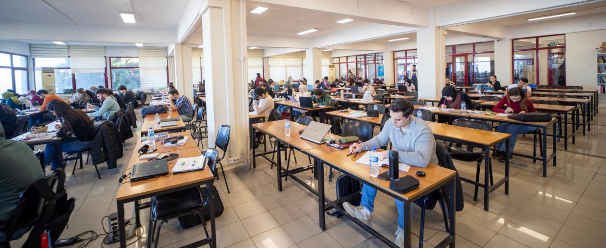
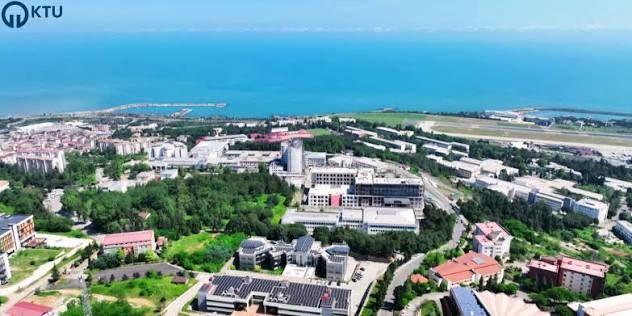
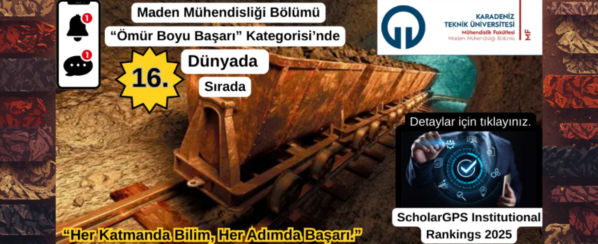

Bilimle Büyüyen, Geleceğe Yön Veren Üniversite
69 yıllık köklü akademik kültürümüzle evrensel bilgi üretimi ve toplum odaklı yenilikçilik.
Misyonumuz
Bilim ve teknolojide evrensel düzeyde araştırma yapmak, uluslararası yetkinliğe sahip araştırmacı ve girişimci bireyler yetiştirmek; bölge ve ülke kalkınmasına katma değer sağlayacak yenilikçi çözümler üretmektir.
Vizyonumuz
Öncü araştırmaları, nitelikli eğitim programları ve sürdürülebilir yeşil kampüsü ile küresel ölçekte tanınan ve tercih edilen lider bir araştırma üniversitesi olmak.
Temel Değerlerimiz
Akademik özgürlük, liyakat ve adalet, yenilikçilik ve girişimcilik, etik değerlere bağlılık, çevreye ve insana saygı ile Karadeniz'in üretken ve dinamik ruhu.
KTÜ'nün Tarihsel Dönüm Noktaları
Ankara ve İstanbul dışında kurulan Türkiye'nin ilk, toplamda ise 4. teknik üniversitesi.
Üniversitenin Kuruluş Kanunu
20 Mayıs 1955 tarihli ve 6594 sayılı kanunla Trabzon Milletvekili Mustafa Reşit Tarakçıoğlu ve 28 arkadaşının teklifiyle Karadeniz Teknik Üniversitesi kuruldu.
Kanuni Kampüsü ve İlk Öğrenciler
Cumhurbaşkanı Cemal Gürsel'in katılımıyla İnşaat-Mimarlık, Makine-Elektrik, Jeoloji ve Orman Fakülteleri ile bugünkü modern Kanuni Kampüsü'nde eğitim meşalesi yakıldı.
Bölgesel Büyüme & Tıp Fakültesi
Fatih Eğitim, Tıp Fakültesi ve Doğu Karadeniz'in en büyük sağlık üssü olan Farabi Hastanesi kurularak üniversite çok disiplinli bir metropol yapısına ulaştı.
YÖK Araştırma Üniversitesi Beratı
Yükseköğretim Kurulu (YÖK) tarafından yürütülen "Araştırma Odaklı Misyon Farklılaşması Programı" kapsamında KTÜ, Türkiye'nin sayılı Araştırma Üniversiteleri arasına girdi.
Küresel Başarılar & TEKNOFEST
Maden Mühendisliği alanında dünyada 14. sıra, TEKNOFEST Hyperloop yarışmasında 3. kez üst üste Türkiye şampiyonluğu ve uluslararası patent tescilleri ile geleceğe yürüyor.
Kanuni Kampüsü Sosyal & Bilimsel İmkânları
Eğitimin yanında kültür, sanat, spor ve sosyal hayatın buluşma noktası.

Faik Ahmet Barutçu Kütüphanesi
7/24 açık modern çalışma salonları, 1.5 milyon basılı ve dijital kaynak, sessiz bireysel kabinler ve zengin bilimsel veritabanı erişimi.

Kültür ve Kongre Merkezleri
Prof. Dr. Osman Turan ve AKM salonlarında uluslararası sempozyumlar, tiyatrolar, konserler ve öğrenci kulübü etkinlikleri.

Olimpik Spor Kompleksi & Teknokent
Yarı olimpik yüzme havuzu, kapalı spor salonları, tenis kortları ve girişimci gençlerin Ar-Ge projelerini hayata geçirdiği Trabzon Teknokent.
Prof. Dr. Hamdullah ÇUVALCI
Karadeniz Teknik Üniversitesi Rektörü
"Sevgili Gençler ve Değerli Araştırmacılar,
Karadeniz Teknik Üniversitesi, kurulduğu günden bu yana yalnızca bir bilgi aktarım kurumu olmamış; bilimi, teknolojiyi ve kültürü harmanlayan bir yaşam biçimi sunmuştur. Ülkemizin kalkınma hedefleri doğrultusunda nitelikli insan kaynağı yetiştirmeye, milli teknoloji hamlesine katkı sağlamaya ve Karadeniz'in mavi ufuklarından tüm dünyaya bilim ihraç etmeye kararlılıkla devam ediyoruz. Kapılarımız, geleceği inşa etmek isteyen tüm vizyoner beyinlere sonuna kadar açıktır."